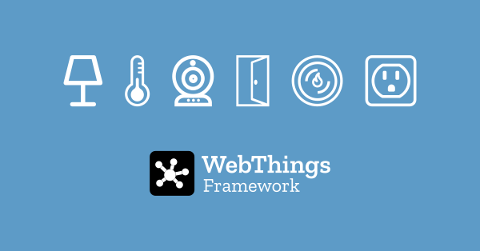

WebThings Framework

Build your own web things.
The WebThings Framework is a collection of re-usable software components to help developers build their own web things.
This section contains installation instructions and examples showing how to create a web thing in a range of different programming languages.
🗒️ Note: Most of these libraries implement Mozilla's legacy Web Thing API and have not yet been updated to conform to the latest W3C WoT standards. Contributions to bring these libraries up to date are gratefully received on GitHub.